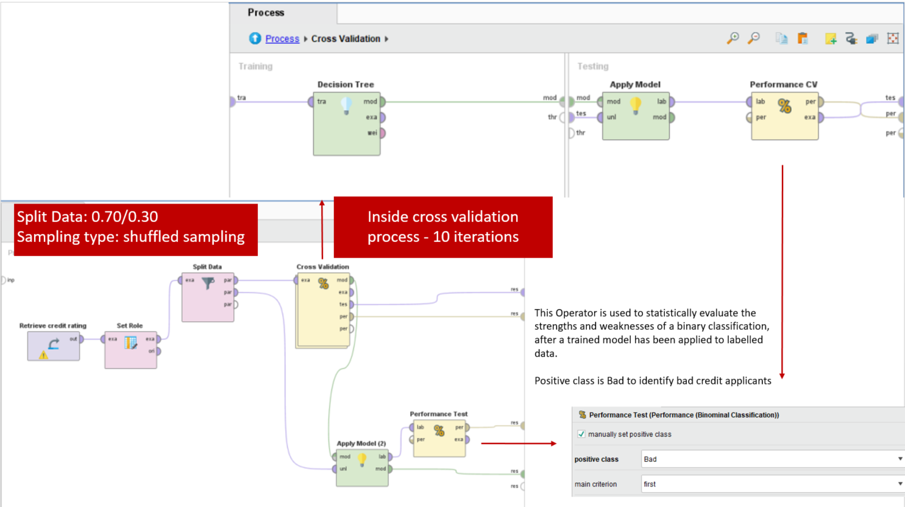

Mai Le
Resume | LinkedIn | Tableau | GitHub
Experienced analyst with a demonstrated history of working in the banking and transportation industry. Currently, looking to expand my skills beyond the classroom with professional experience.
I have a Bachelor of Business Administration in Global Supply Chain Management and Investment Finance from Rider University and am working on obtaining a Master of Science in Business Analytics at Temple University.
Portfolio
Data Science
Kidney Stone Prediction based on Urine Analysis Public
Tools/Techniques: Python (Matplotlib, NumPy, Panda, Seaborn, sklearn)
My objective in this project is to find the best model to predict the probability of a kidney stone being present in a sample of data collected from urinalysis. The classification models used are Random Forest Classifier, K Neighbors Classifier, and Logistic Regression. Based on the final results, Random Forest is the best model to predict the probability of presence of kidney stones.
City of SF Vehicle Collisions and Weather Conditions
Tools/Techniques: Python (Matplotlib, NumPy, Panda, Seaborn, Geopandas. sklearn, XGBoost)
This project aims to draw the connection between transportation crashes occurred in the city of San Francisco and the weather forecasts in the same area. The hypothesis is that inclement weather lead to higher traffic accidents in certain areas of the city.
The majority of accidents happened when the sky is clear or cloudy. The temperature does not appear to be a major factor in the likelihood of collisions that cause moderate injuries. There is also no apparent correlation between number of people involved and the other factors, therefore a different approach to the analysis was used. Therefore, Logistic regression, XGBoost, and Random Forest were to predict moderate injury collisions.

Avocado Price Prediction
Tools/Techniques: SAS JMP, Excel
In recent years, avocado prices and sales volume have been on the rise in multiple US markets. I wanted to assess the Avocado pricing data based on consumer demand as it can be helpful to predict the future prices. Applied multiple regression analysis using data collected from Hass Avocado Board between 2015 and 2020.

Credit Risk Prediction
Tools/Techniques: RapidMiner, Decision Tree Model
The objective of this exercise is to use a decision tree model to predict the credit rating of customers (Bad or Good) based on various attributes to help bank managers decide about loan applicant

Data Visualization
Call Center Dashboard
Data by Mark Bradbourne

HR Dashboard

TED Talks: A Hero’s Journey of Persuasion

Database Design
Elite Model Management
Tools/Techniques: SQLServer
I created a database to store records for a fake modeling agency called Elite Model Management.
.png)